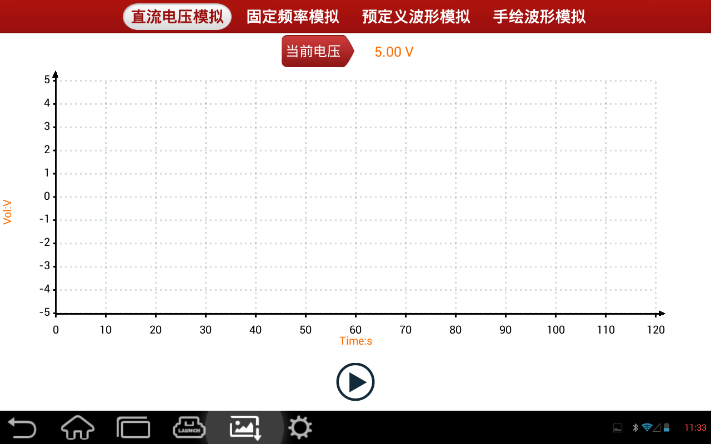

汽车传感器是汽车电控系统的信号输入装置，它把汽车各种运行参数，如车速、水温、发动机转速、空气流量、吸气门开关等，转化成电信号输给汽车 电脑，汽车电脑根据这些参数来调整发动机的运行状态以保持发动机的最佳状况。车用传感器的种类很多，判断传感器出现的故障时，也不应只考虑传感器本 身，还应该考虑出现故障的整个电路以及汽车在运行中的各种参数变化，从而判断出传感器是否有故障。“传感器”功能正是为诊断汽车传感器器故障而专门开发 ，用户可以方便快捷的对传感器进行诊断。下图是“传感器”主界面:
|  |
传感器有四个模拟功能：
从界面选择其中一个功能，即可进入相应模拟功能。